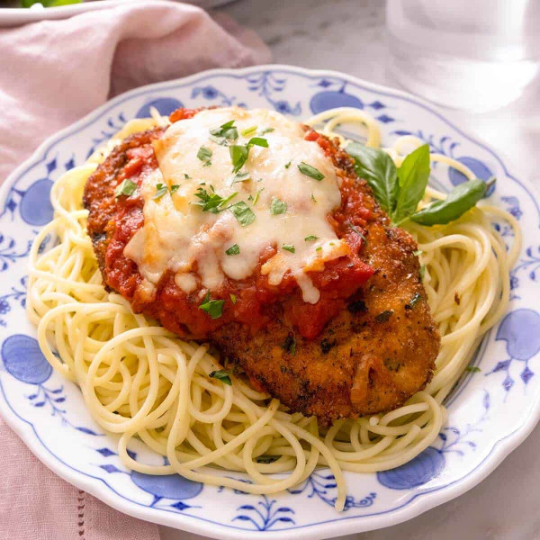

Chicken Parmesan

Description
An absolutely delicious with the juicy chicken, crunchy and crispy breadcrumb coating, rich and delicious marinara
sauce, and the melted mozzarella topping. Serve it with some spaghetti and you’re in comfort food heaven.
Ingredients
- 4 boneless skinless chicken breasts
- Salt and freshly ground black pepper
- 1/3 cup all-purpose flour
- 2 large eggs beaten
- ½ cup Italian breadcrumbs
- 1 cup panko bread crumbs
- 1 cup olive oil for frying
- 2 cups mozzarella shredded or thinly sliced
- 1/2 cup freshly grated Parmesan
- 24 oz Marinara I use Rao’s
- 3 tbsp chopped parsley
- Fresh basil and parsley leaves for garnish
Steps
- Preheat oven to 425F. Cut the chicken breasts down the middle then pound into thin fillets.
- Whisk the eggs together well with a pinch of salt and pepper in a medium bowl. In a separate bowl combine flour with a teaspoon of salt and ½ tsp pepper then whisk together and set aside. In a third bowl combine the breadcrumbs with ½ cup grated parmesan and mix together.
- Dredge each breast in the flour and tap off excess, then dip in the egg and let excess drip off. Dredge on both sides in the bread crumbs and press down so the breadcrumbs stick and form a nice layer.
- Pour the olive oil in a large sauté pan and heat over high heat until you see the oil shimmering. Add 2-3 chicken breasts to the pan at a time and cook until golden brown on both sides, about 4 minutes per side.
- Transfer to a baking sheet and top each breast with ⅓-½ cup marinara sauce, a generous sprinkle of mozzarella, and a tablespoon of Parmesan.
- Bake in the oven until the chicken is cooked through and the cheese is melted and golden, 15-20 minutes. Remove from the oven and garnish with basil and parsley leaves. Serve over spaghetti.